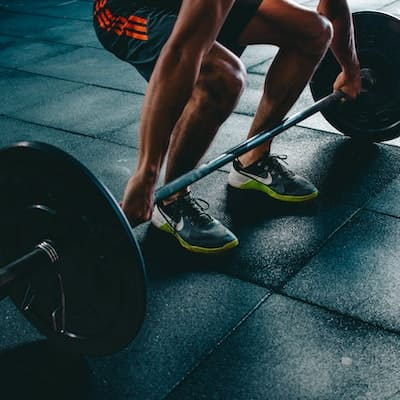

<section class="blogs">
  <h1>Blog</h1>

  <div class="blogs__grid container">
    <article class="article" [routerLink]="['/blog', 'factors']">
      <h2>Factores clave en el proceso para la pérdida de grasa</h2>
      <figure>
        
      </figure>
    </article>

    <article class="article" [routerLink]="['/blog', 'dose']">
      <h2>¿Dosis mínima de entrenamiento para obtener resultados?</h2>
      <figure>
        
      </figure>
    </article>

    <article class="article" [routerLink]="['/blog', 'keys']">
      <h2>Claves para no estancarte en la pérdida de grasa</h2>
      <figure>
        
      </figure>
    </article>
  </div>

  <section class="blog">
    <router-outlet></router-outlet>
  </section>
</section>
